How it plays
Go out. Come home.
Make something new.

- The fieldCompanion
- The dockCaddy
- HomeStation
Concept 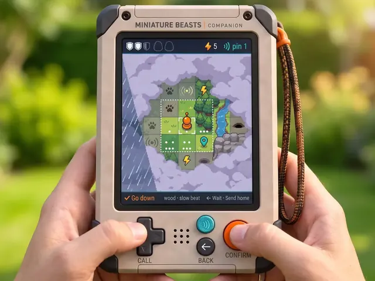
Explore
Every step lifts the fog.CompanionConcept 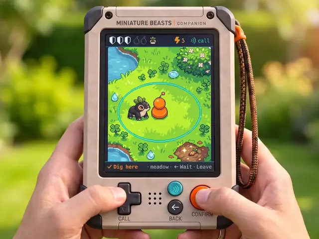
Find a pod
Your partner digs it up.CompanionIn the build 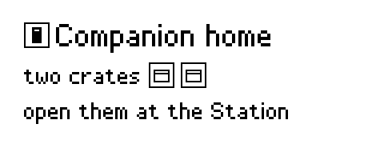
Dock
Your crates cross home.CaddyIn design 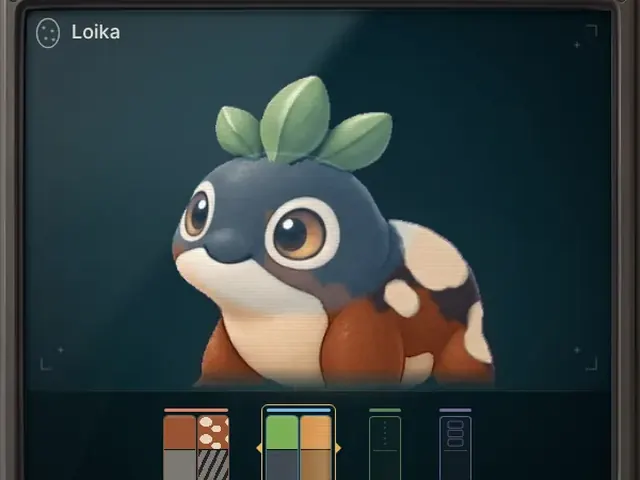
Read
Uncover its genes.StationIn the build 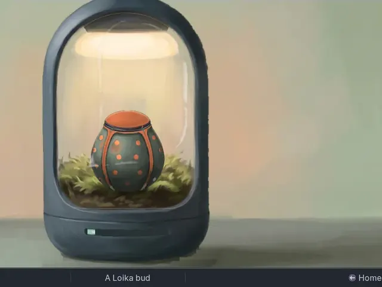
Grow
Hatch it, or shape it first.StationConcept 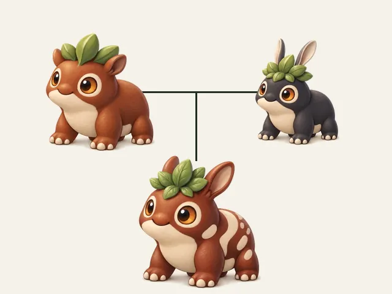
Breed
Two parents, one child.Station
Then out again.
- 1 in 8
- Odds, always in eighths
- 1 child
- From every cross
- 16 species
- Each with its own genome
- No limit
- On the pods you keep at home
Companion
Walk into the fog.
Creatures react to you, and some leave a pod behind.
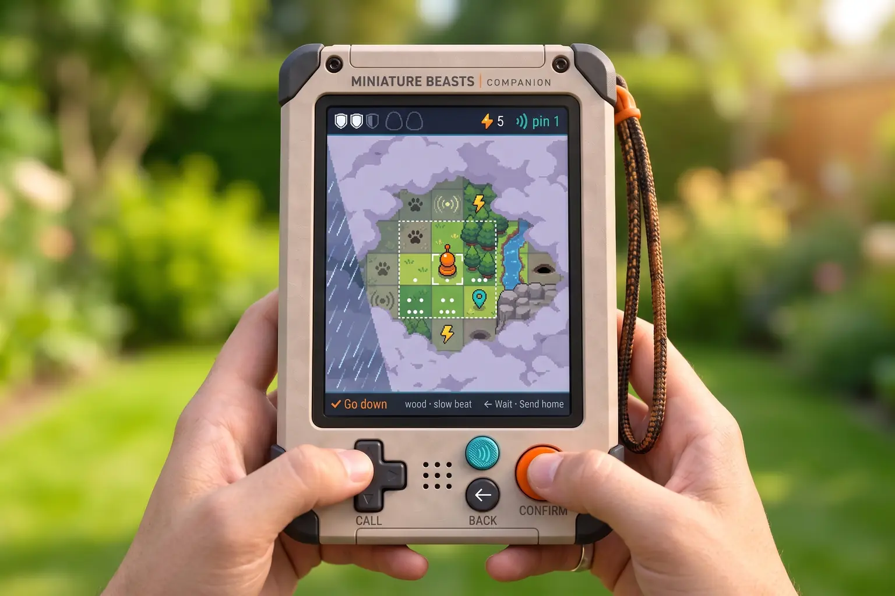
Caddy
Where the two meet.
Seat the Companion and its crates cross to the Station. The panel says what came home.
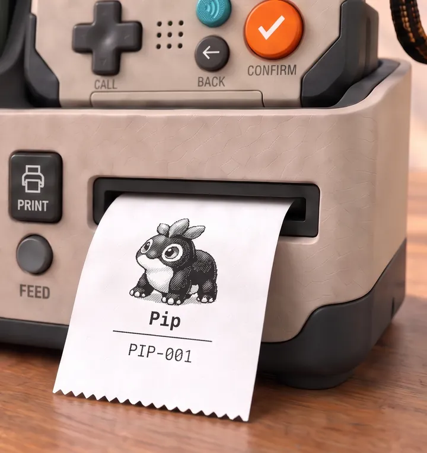
- Away
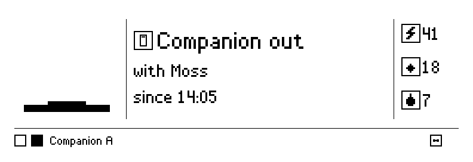
- Docked
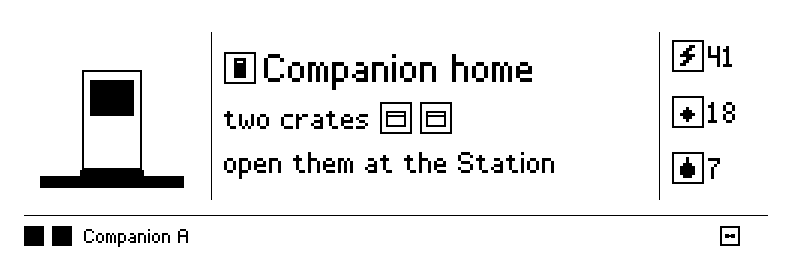
- Opened
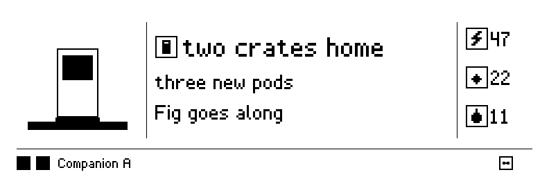
Station
This is home.
Take your time.
Every pod you bring back has a place, and nothing is forced on you.
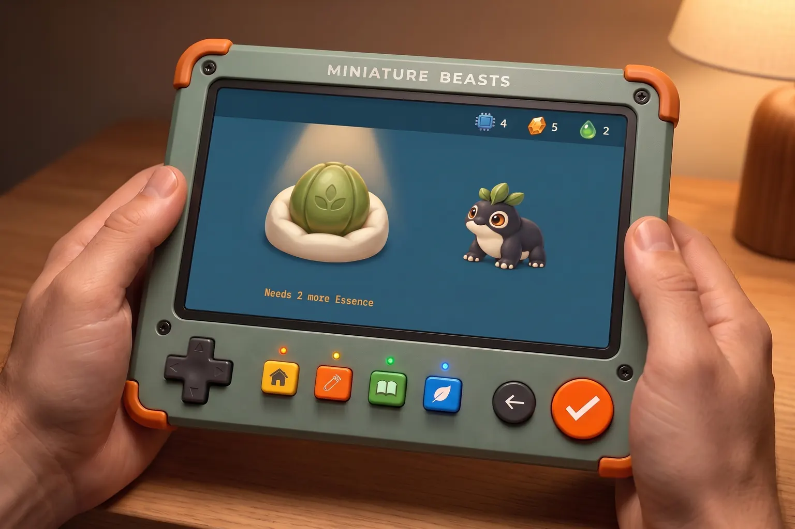
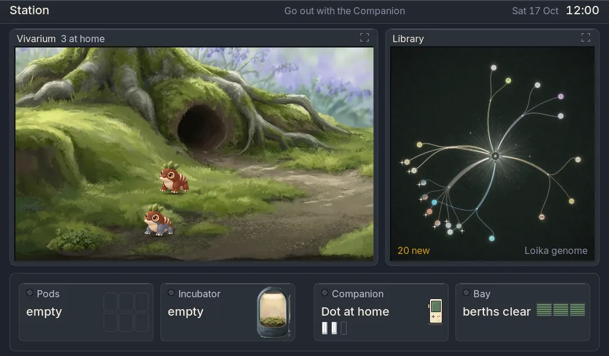
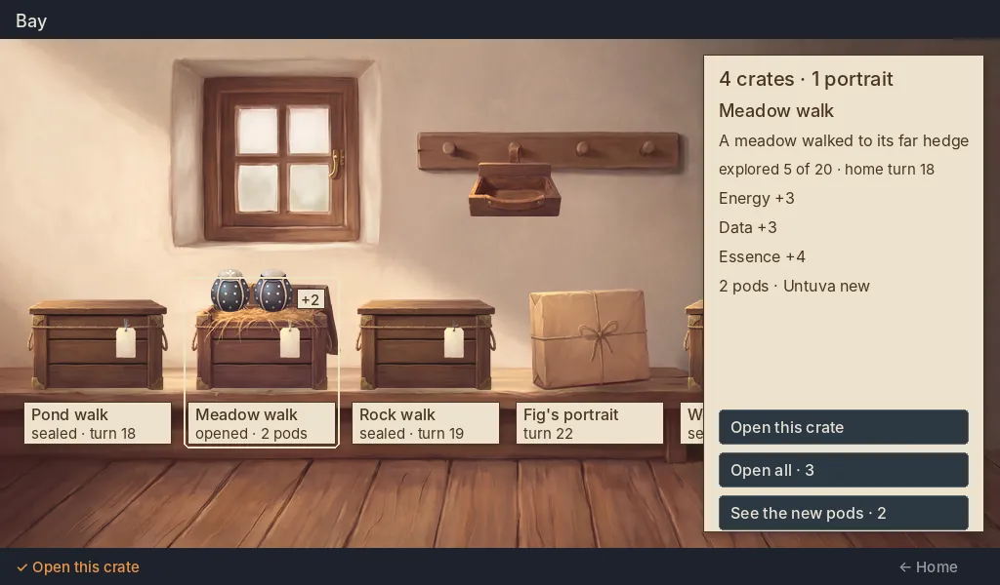
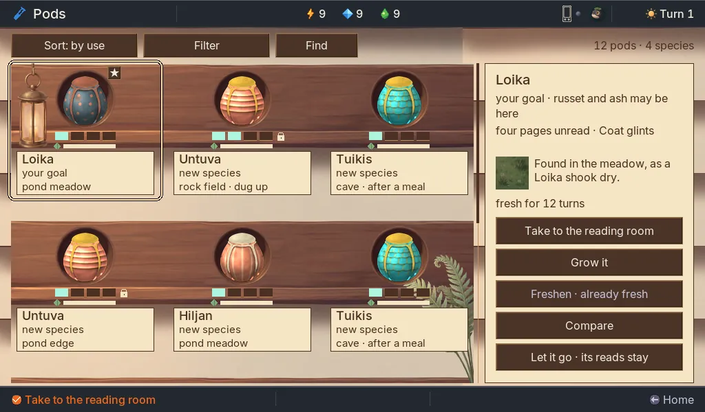
Reading
Read a pod.
See what it’s made of.
Each read uncovers a chapter of its genes.
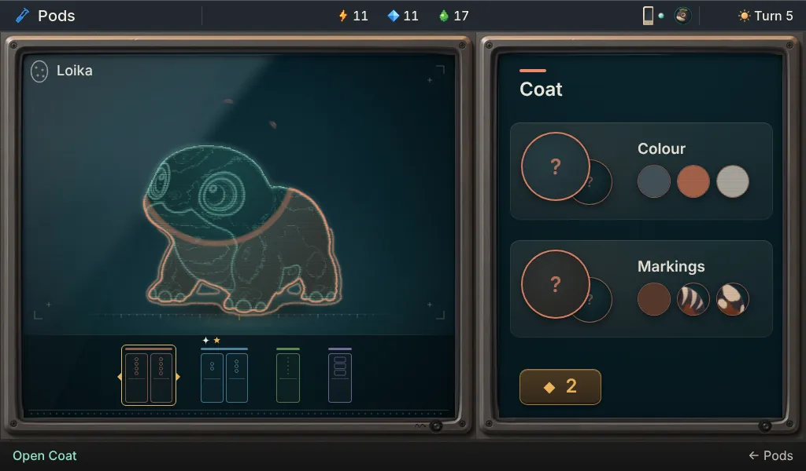
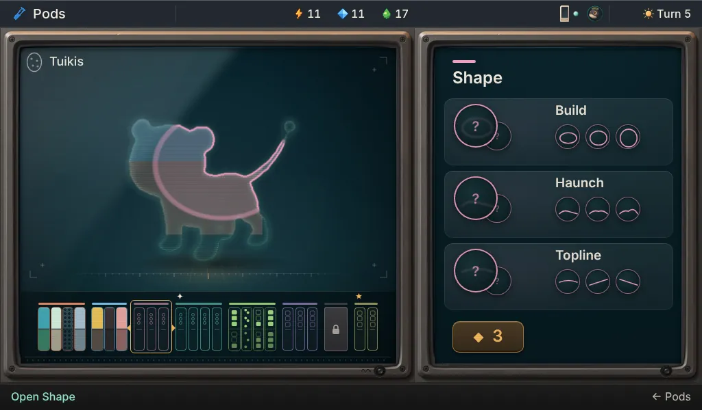
Vivarium
Rooms full of mibis.
Watch them wander and slip behind the stones.
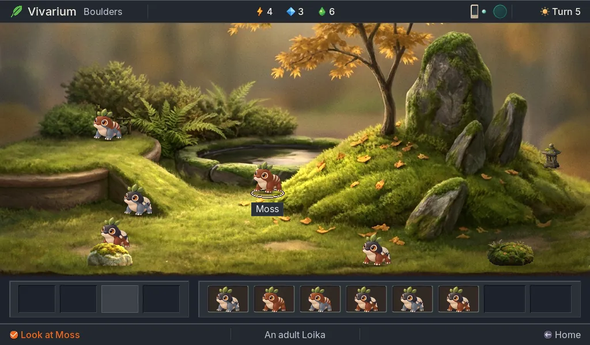

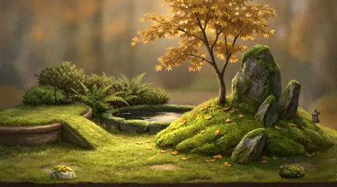


Breeding
One cross. One child.
True odds.
The odds come from the parents alone. Wishing never changes them.
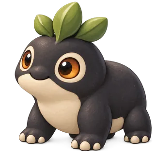

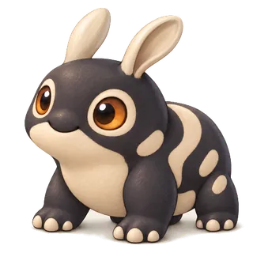
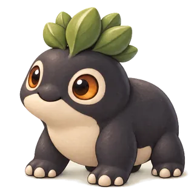
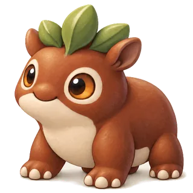

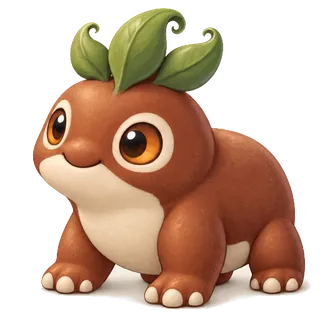

Pale islands, back from grandmother Sable.
ConceptAn imagined family of Loika
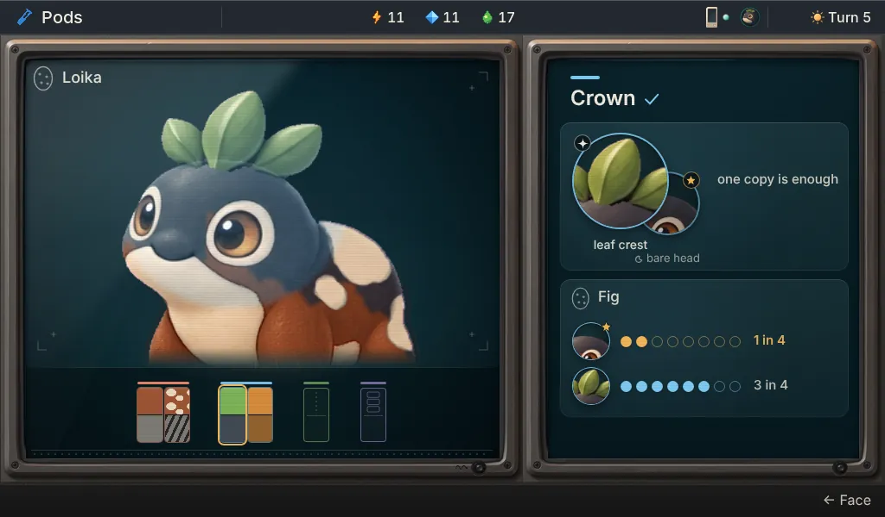
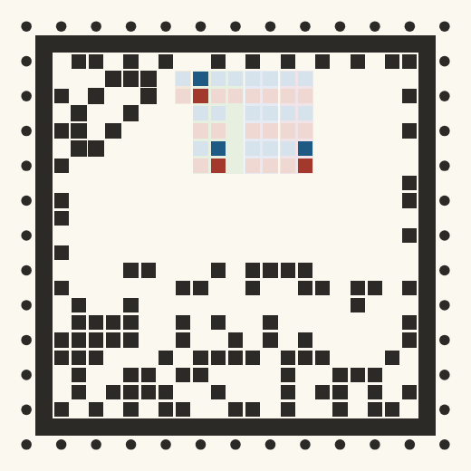
Sixteen species
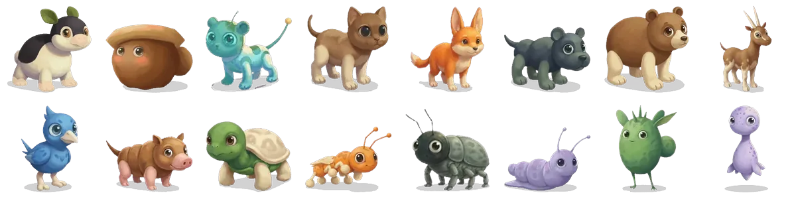
Life
Raise them for life.
Juvenile, adult, elder. They never decline.
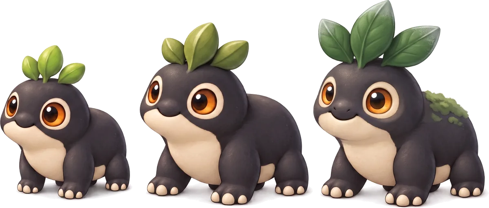
- Juvenile
- Adult
- Elder
Where it’s going
One loop first.
Then the real thing.
- NowOne playable loop across the three devices
- NextThe game on emulated hardware
- LaterNew maps from the Station, and seasonal ones
A few fair questions.
Is it real?
The field test and the Station build run in your browser today. Every picture says what it is: in the build, being built, in design, Station art, rough playable, or concept. No device exists yet.
When can I get one?
No date and no price yet. The roadmap shows what comes next.
Can I build one myself?
Not yet. The boards and cases will be open hardware, and the software is open source already.
Is anything for sale in the game?
No supplies, no speed, no luck. The kit plays fully on its own, with no account and no internet.